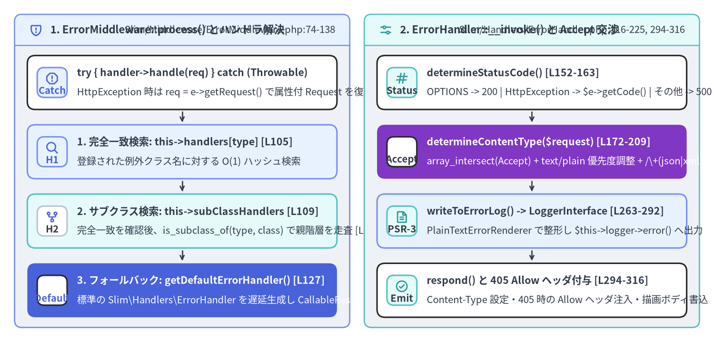
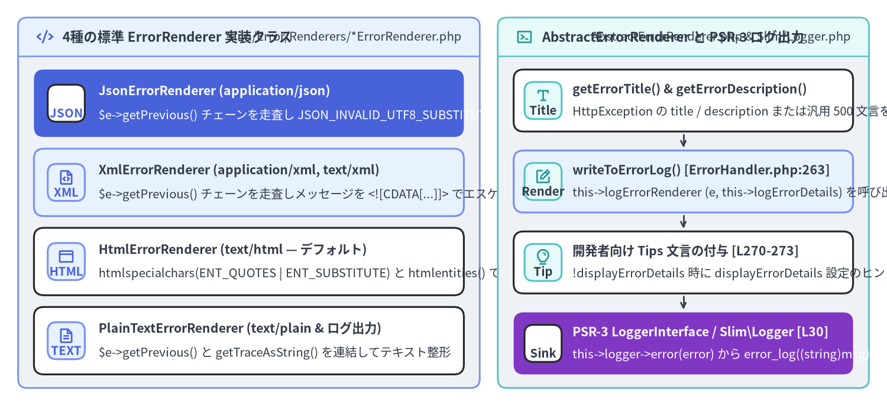

ErrorMiddleware・ErrorHandler・コンテンツ交渉レンダラの内部実装
Slim 4 は例外処理をフレームワーク中核の PSR-15 サブシステムとして設計しており、Slim\Middleware\ErrorMiddleware（Slim/Middleware/ErrorMiddleware.php）、Slim\Handlers\ErrorHandler（Slim/Handlers/ErrorHandler.php）、Slim\Error\AbstractErrorRenderer（Slim/Error/AbstractErrorRenderer.php）、Slim\Error\Renderers\* 配下の 4 種の具象レンダラ（Html、Json、PlainText、Xml）、および PSR-3 フォールバックロガー Slim\Logger（Slim/Logger.php）の**計 7 ファイル（416 LOC）**で構成されています。

Source Code
from drawlib.canvas import save, setup
from drawlib.icons import phosphor
from drawlib.smartarts import CardList, Panel
from drawlib.styles import Colors, Styles
setup(width=196, height=94, dpi=150)
# Left Panel: ErrorMiddleware Interception & 4-Tier Handler Resolution
p_left = Panel(
"1. ErrorMiddleware::process() とハンドラ解決",
"Slim/Middleware/ErrorMiddleware.php:74-138",
style=Styles.Neutral.patch(shape_r=2.0),
header_style=Styles.PrimaryNeutral.patch(shape_line_width=1.2),
text_style=Styles.DarkBold.patch(text_size=10.8),
description_style=Styles.Dark.patch(text_size=9.8),
icon=phosphor.shield_warning,
icon_style=Styles.PrimaryBold,
header_variant="filled",
header_height=8.5,
)
p_left.draw((4.0, 4.0), width=92.0, height=86.0)
lx, lw, lh = p_left.get_content_box((4.0, 4.0), width=92.0, height=86.0, padding=(3.5, 2.8))
em_steps = CardList(
style=Styles.White,
text_style=Styles.DarkBold.patch(text_size=10.2),
description_style=Styles.Dark.patch(text_size=9.8),
badge_shape="rounded_rect",
badge_style=Styles.PrimaryNeutral,
badge_text_style=Styles.PrimaryBold.patch(text_size=9.8),
icon_style=Styles.PrimaryBold,
direction="vertical",
spacing=2.5,
show_arrows=True,
arrow_style=Styles.DarkBold.patch(line_arrow_head_scale=10, line_width=1.3),
)
em_steps.add(
"try { handler->handle(req) } catch (Throwable)",
"HttpException 時は req = e->getRequest() で属性付 Request を復元 [L85]",
badge_text="Catch",
icon=phosphor.warning_octagon,
)
em_steps.add(
"1. 完全一致検索: this->handlers[type] [L105]",
"登録された例外クラス名に対する O(1) ハッシュ検索",
badge_text="H1",
icon=phosphor.magnifying_glass,
style=Styles.PrimaryNeutral,
)
em_steps.add(
"2. サブクラス検索: this->subClassHandlers [L109]",
"完全一致を確認後、is_subclass_of(type, class) で親階層を走査 [L114]",
badge_text="H2",
icon=phosphor.git_fork,
style=Styles.SecondaryNeutral,
badge_style=Styles.White.patch(shape_line_color=Colors.Gray4),
badge_text_style=Styles.DarkBold.patch(text_size=9.8),
)
em_steps.add(
"3. フォールバック: getDefaultErrorHandler() [L127]",
"標準の Slim\\Handlers\\ErrorHandler を遅延生成し CallableResolver で解決",
badge_text="Default",
icon=phosphor.shield_check,
style=Styles.PrimaryFlat,
text_style=Styles.WhiteBold.patch(text_size=10.2),
description_style=Styles.White.patch(text_size=9.8),
badge_style=Styles.White,
badge_text_style=Styles.PrimaryBold.patch(text_size=9.8),
icon_style=Styles.WhiteBold,
)
em_steps.draw(xy=lx, width=lw, height=lh)
# Right Panel: ErrorHandler::__invoke() Status, Logging & Accept Negotiation
p_right = Panel(
"2. ErrorHandler::__invoke() と Accept 交渉",
"Slim/Handlers/ErrorHandler.php:116-225, 294-316",
style=Styles.Neutral.patch(shape_r=2.0),
header_style=Styles.SecondaryNeutral.patch(shape_line_width=1.2),
text_style=Styles.DarkBold.patch(text_size=10.8),
description_style=Styles.Dark.patch(text_size=9.8),
icon=phosphor.sliders_horizontal,
icon_style=Styles.SecondaryBold,
header_variant="filled",
header_height=8.5,
)
p_right.draw((100.0, 4.0), width=92.0, height=86.0)
rx, rw, rh = p_right.get_content_box((100.0, 4.0), width=92.0, height=86.0, padding=(3.5, 2.8))
eh_steps = CardList(
style=Styles.White,
text_style=Styles.DarkBold.patch(text_size=10.2),
description_style=Styles.Dark.patch(text_size=9.8),
badge_shape="rounded_rect",
badge_style=Styles.SecondaryNeutral,
badge_text_style=Styles.DarkBold.patch(text_size=9.8),
icon_style=Styles.SecondaryBold,
direction="vertical",
spacing=2.5,
show_arrows=True,
arrow_style=Styles.DarkBold.patch(line_arrow_head_scale=10, line_width=1.3),
)
eh_steps.add(
"determineStatusCode() [L152-163]",
"OPTIONS -> 200 | HttpException -> $e->getCode() | その他 -> 500",
badge_text="Status",
icon=phosphor.hash,
)
eh_steps.add(
"determineContentType($request) [L172-209]",
"array_intersect(Accept) + text/plain 優先度調整 + /\\+(json|xml)/ 正規表現",
badge_text="Accept",
icon=phosphor.funnel,
style=Styles.AccentFlat,
text_style=Styles.WhiteBold.patch(text_size=10.2),
description_style=Styles.White.patch(text_size=9.8),
badge_style=Styles.White,
badge_text_style=Styles.DarkBold.patch(text_size=9.8),
icon_style=Styles.WhiteBold,
)
eh_steps.add(
"writeToErrorLog() -> LoggerInterface [L263-292]",
"PlainTextErrorRenderer で整形し $this->logger->error() へ出力",
badge_text="PSR-3",
icon=phosphor.file_text,
style=Styles.PrimaryNeutral,
)
eh_steps.add(
"respond() と 405 Allow ヘッダ付与 [L294-316]",
"Content-Type 設定・405 時の Allow ヘッダ注入・描画ボディ書込",
badge_text="Emit",
icon=phosphor.check_circle,
)
eh_steps.draw(xy=rx, width=rw, height=lh)
save()
1. ErrorMiddleware：例外境界と4段階のハンドラ解決
$app->addErrorMiddleware($displayErrorDetails, $logErrors, $logErrorDetails, $logger)（Slim/App.php:145-161）をミドルウェア登録の最後に呼び出すことで、ErrorMiddleware は MiddlewareDispatcher::$tip の最外殻に配置されます。
process()・handleException()・getErrorHandler()（Slim/Middleware/ErrorMiddleware.php:74-120）
// Slim/Middleware/ErrorMiddleware.php:74-120
public function process(ServerRequestInterface $request, RequestHandlerInterface $handler): ResponseInterface
{
try {
return $handler->handle($request);
} catch (Throwable $e) {
return $this->handleException($request, $e);
}
}
public function handleException(ServerRequestInterface $request, Throwable $exception): ResponseInterface
{
if ($exception instanceof HttpException) {
$request = $exception->getRequest();
}
$exceptionType = get_class($exception);
$handler = $this->getErrorHandler($exceptionType);
/** @var ResponseInterface */
return $handler($request, $exception, $this->displayErrorDetails, $this->logErrors, $this->logErrorDetails);
}
getErrorHandler(string $type)（103〜120 行目）は、キャッチした例外のクラス名 $exceptionType = get_class($exception) に対して4段階の優先順位でハンドラを検索し、最終的に $this->callableResolver->resolve(...) で呼び出し可能な形式へ解決します。
- 完全一致マップ（
isset($this->handlers[$type])、105 行目）:setErrorHandler($type, $handler, false)（デフォルトの$handleSubclasses = false）で登録されたクラス名を $O(1)$ で検索します。 - サブクラスマップの完全一致（
isset($this->subClassHandlers[$type])、109 行目）:$handleSubclasses = trueで登録された基底クラス自身がスローされた場合に $O(1)$ でヒットします。 - 親クラス階層のポリモーフィック走査（
is_subclass_of($type, $class)、113〜117 行目）:$this->subClassHandlersをループし、is_subclass_of($type, $class)を判定します。たとえばsetErrorHandler(HttpSpecializedException::class, $myHandler, true)と登録すれば、400〜501の全 9 種の HTTP 例外を一括して捕捉できます。 - デフォルト
ErrorHandlerへのフォールバック（getDefaultErrorHandler()、119・127〜138 行目）:new ErrorHandler($this->callableResolver, $this->responseFactory, $this->logger)を遅延生成して返します。
2. ErrorHandler::__invoke()：ステータス決定・Allow ヘッダ・Accept 交渉
なぜ determineStatusCode() は OPTIONS メソッドに対して 200 を返すのか？（Slim/Handlers/ErrorHandler.php:152-163）
// Slim/Handlers/ErrorHandler.php:152-163
protected function determineStatusCode(): int
{
if ($this->method === 'OPTIONS') {
return 200;
}
if ($this->exception instanceof HttpException) {
return $this->exception->getCode();
}
return 500;
}
なぜ例外処理中にリクエストメソッドが OPTIONS だと HTTP 200 を返すのでしょうか？ブラウザが CORS プリフライトリクエストとして OPTIONS /api/users を送信した際、アプリケーション側に $app->get('/api/users', ...) と $app->post('/api/users', ...) しか定義されていないと、RoutingMiddleware は許可メソッド ['GET', 'POST'] を保持した HttpMethodNotAllowedException（405）をスローします。このとき ErrorHandler が OPTIONS に対してステータスコード 200 を選択しつつ、respond()（303〜306 行目）で Allow: GET, POST ヘッダを付与することで、明示的な OPTIONS ルートを書かなくても CORS ミドルウェアと連携してプリフライト応答を正常に完結できる設計になっています。
Accept ヘッダによるコンテンツネゴシエーション（Slim/Handlers/ErrorHandler.php:172-209）
forceContentType()（146〜150 行目）で MIME タイプが強制固定されていない限り、determineContentType(ServerRequestInterface $request) は $this->errorRenderers に登録された 5 つのキー（'application/json'、'application/xml'、'text/xml'、'text/html'、'text/plain'）と Accept ヘッダを照合します。
// Slim/Handlers/ErrorHandler.php:172-209
protected function determineContentType(ServerRequestInterface $request): ?string
{
$acceptHeader = $request->getHeaderLine('Accept');
$selectedContentTypes = array_intersect(
explode(',', $acceptHeader),
array_keys($this->errorRenderers)
);
$count = count($selectedContentTypes);
if ($count) {
$current = current($selectedContentTypes);
if ($current === 'text/plain' && $count > 1) {
$next = next($selectedContentTypes);
if (is_string($next)) {
return $next;
}
}
if (is_string($current)) {
return $current;
}
}
if (preg_match('/\+(json|xml)/', $acceptHeader, $matches)) {
$mediaType = 'application/' . $matches[1];
if (array_key_exists($mediaType, $this->errorRenderers)) {
return $mediaType;
}
}
return null;
}
ここには3つの精巧なルールが組み込まれています。
- カンマ分割と
array_intersect()（175〜178 行目）: クライアントのAcceptヘッダ順序を保ったまま、登録済みレンダラとの共通集合を抽出します。 text/plainよりも構造化フォーマットを優先する特例（188〜193 行目）: クライアントがAccept: text/plain,application/jsonのように複数の MIME タイプを送ってきた場合、先頭が'text/plain'であればnext($selectedContentTypes)を呼び出して 2 番目の'application/json'等を優先採用します。- RFC 6839 構造化構文サフィックス正規表現（
/\+(json|xml)/、201〜206 行目）:application/problem+jsonやapplication/vnd.api+json、application/atom+xmlなどの拡張メディアタイプを正規表現で検出し、自動的に'application/json'または'application/xml'のレンダラへマッピングします。いずれにも一致しない場合はnullを返し、デフォルトのHtmlErrorRenderer（'text/html'）が使用されます。
3. AbstractErrorRenderer・例外チェーン走査・PSR-3 ロギング

Source Code
from drawlib.canvas import save, setup
from drawlib.icons import phosphor
from drawlib.smartarts import CardList, Panel
from drawlib.styles import Colors, Styles
setup(width=196, height=90, dpi=150)
# Left Panel: 4 Built-In Error Renderers
p_left = Panel(
"4種の標準 ErrorRenderer 実装クラス",
"Slim/Error/Renderers/*ErrorRenderer.php",
style=Styles.Neutral.patch(shape_r=2.0),
header_style=Styles.PrimaryNeutral.patch(shape_line_width=1.2),
text_style=Styles.DarkBold.patch(text_size=10.8),
description_style=Styles.Dark.patch(text_size=9.8),
icon=phosphor.code,
icon_style=Styles.PrimaryBold,
header_variant="filled",
header_height=8.5,
)
p_left.draw((4.0, 4.0), width=102.0, height=82.0)
lx, lw, lh = p_left.get_content_box((4.0, 4.0), width=102.0, height=82.0, padding=(3.5, 3.0))
ren_list = CardList(
style=Styles.White,
text_style=Styles.DarkBold.patch(text_size=10.2),
description_style=Styles.Dark.patch(text_size=9.8),
badge_shape="rounded_rect",
badge_style=Styles.PrimaryNeutral,
badge_text_style=Styles.PrimaryBold.patch(text_size=9.8),
icon_style=Styles.PrimaryBold,
direction="vertical",
spacing=2.6,
)
ren_list.add(
"JsonErrorRenderer (application/json)",
"$e->getPrevious() チェーンを走査し JSON_INVALID_UTF8_SUBSTITUTE で直列化",
badge_text="JSON",
icon=phosphor.brackets_curly,
style=Styles.PrimaryFlat,
text_style=Styles.WhiteBold.patch(text_size=10.2),
description_style=Styles.White.patch(text_size=9.8),
badge_style=Styles.White,
badge_text_style=Styles.PrimaryBold.patch(text_size=9.8),
icon_style=Styles.WhiteBold,
)
ren_list.add(
"XmlErrorRenderer (application/xml, text/xml)",
"$e->getPrevious() チェーンを走査しメッセージを <![CDATA[...]]> でエスケープ",
badge_text="XML",
icon=phosphor.file_code,
style=Styles.PrimaryNeutral,
)
ren_list.add(
"HtmlErrorRenderer (text/html — デフォルト)",
"htmlspecialchars(ENT_QUOTES | ENT_SUBSTITUTE) と htmlentities() で XSS 防止",
badge_text="HTML",
icon=phosphor.browser,
)
ren_list.add(
"PlainTextErrorRenderer (text/plain & ログ出力)",
"$e->getPrevious() と getTraceAsString() を連結してテキスト整形",
badge_text="TEXT",
icon=phosphor.file_text,
)
ren_list.draw(xy=lx, width=lw, height=lh)
# Right Panel: AbstractErrorRenderer & PSR-3 Logger Pipeline
p_right = Panel(
"AbstractErrorRenderer と PSR-3 ログ出力",
"AbstractErrorRenderer.php & Slim/Logger.php",
style=Styles.Neutral.patch(shape_r=2.0),
header_style=Styles.SecondaryNeutral.patch(shape_line_width=1.2),
text_style=Styles.DarkBold.patch(text_size=10.8),
description_style=Styles.Dark.patch(text_size=9.8),
icon=phosphor.terminal_window,
icon_style=Styles.SecondaryBold,
header_variant="filled",
header_height=8.5,
)
p_right.draw((110.0, 4.0), width=82.0, height=82.0)
rx, rw, rh = p_right.get_content_box((110.0, 4.0), width=82.0, height=82.0, padding=(3.5, 3.0))
log_list = CardList(
style=Styles.White,
text_style=Styles.DarkBold.patch(text_size=10.2),
description_style=Styles.Dark.patch(text_size=9.8),
badge_shape="rounded_rect",
badge_style=Styles.SecondaryNeutral,
badge_text_style=Styles.DarkBold.patch(text_size=9.8),
icon_style=Styles.SecondaryBold,
direction="vertical",
spacing=2.6,
show_arrows=True,
arrow_style=Styles.DarkBold.patch(line_arrow_head_scale=10, line_width=1.3),
)
log_list.add(
"getErrorTitle() & getErrorDescription()",
"HttpException の title / description または汎用 500 文言を取得",
badge_text="Title",
icon=phosphor.text_t,
)
log_list.add(
"writeToErrorLog() [ErrorHandler.php:263]",
"this->logErrorRenderer (e, this->logErrorDetails) を呼び出し",
badge_text="Render",
icon=phosphor.note_pencil,
style=Styles.PrimaryNeutral,
)
log_list.add(
"開発者向け Tips 文言の付与 [L270-273]",
"!displayErrorDetails 時に displayErrorDetails 設定のヒントを追記",
badge_text="Tip",
icon=phosphor.lightbulb,
)
log_list.add(
"PSR-3 LoggerInterface / Slim\\Logger [L30]",
"this->logger->error(error) から error_log((string)msg) へ送出",
badge_text="Sink",
icon=phosphor.broadcast,
style=Styles.AccentFlat,
text_style=Styles.WhiteBold.patch(text_size=10.2),
description_style=Styles.White.patch(text_size=9.8),
badge_style=Styles.White,
badge_text_style=Styles.DarkBold.patch(text_size=9.8),
icon_style=Styles.WhiteBold,
)
log_list.draw(xy=rx, width=rw, height=lh)
save()
4種の標準 ErrorRenderer 実装クラスの比較（Slim/Error/Renderers/*）
4つのレンダラはすべて抽象基底クラス Slim\Error\AbstractErrorRenderer（Slim/Error/AbstractErrorRenderer.php:23-46）を継承し、getErrorTitle(Throwable $e) と getErrorDescription(Throwable $e)（HttpException であればその $title / $description、一般例外であれば 'Slim Application Error'）を共有します。
| レンダラクラス | 対象 MIME タイプ | $displayErrorDetails = false 時の出力 |
$displayErrorDetails = true 時の例外チェーン走査とエスケープ処理 |
|---|---|---|---|
JsonErrorRenderer（全 60 行） |
application/json（+json） |
{"message": "<title>"} |
do { ... } while ($exception = $exception->getPrevious())（34〜36 行目）で親例外チェーンを配列化し、JSON_INVALID_UTF8_SUBSTITUTE | JSON_PRETTY_PRINT | JSON_UNESCAPED_SLASHES でエンコード。 |
XmlErrorRenderer（全 55 行） |
application/xml, text/xml（+xml） |
<error><message><![CDATA[...]]></message></error> |
$exception->getPrevious() チェーンを <exception> 要素として連ね、createCdataSection()（52 行目）で str_replace(']]>', ']]]]><![CDATA[>', $content) による CDATA 分割エスケープを実施。 |
HtmlErrorRenderer（全 95 行） |
text/html（デフォルト） |
<h1><title></h1><p><description></p> の HTML5 文書 |
renderExceptionFragment($exception) で Type・Code・Message・File・Line・Trace を htmlentities() エスケープして出力し、タイトルには htmlspecialchars(..., ENT_QUOTES | ENT_SUBSTITUTE, 'UTF-8') を適用。 |
PlainTextErrorRenderer（全 60 行） |
text/plain（および $logErrorRenderer 既定値） |
"<title>\n" |
formatExceptionFragment($exception)（Trace: %s 含む）を出力し、while ($exception = $exception->getPrevious())（32〜35 行目）で "\nPrevious Error:\n" セクションを連結。 |
クライアント出力とサーバーログ出力の独立制御（writeToErrorLog() と Slim\Logger）
ErrorMiddleware が $displayErrorDetails（HTTP レスポンスへの詳細表示）と $logErrorDetails（サーバーログへの詳細出力）を別々の引数として受け取るのは、本番環境で**「クライアントには内部スタックトレースを隠蔽しつつ（$displayErrorDetails = false）、サーバー側のエラーログには完全な例外チェーンとトレースを記録する（$logErrors = true, $logErrorDetails = true）」**ためです。
ErrorHandler::writeToErrorLog()（Slim/Handlers/ErrorHandler.php:263-276）は $this->logErrorRenderer（デフォルトは PlainTextErrorRenderer::class）を呼び出し、$this->logger->error($error) へ委譲します。コンストラクタで PSR-3 LoggerInterface（Monolog 等）が注入されていない場合は、getDefaultLogger()（289〜292 行目）が new Slim\Logger()（Slim/Logger.php:19-32、Psr\Log\AbstractLogger を継承して PHP 標準の error_log((string) $message) を呼ぶ 33 行の軽量クラス）へフォールバックします。
続いて最終章 第6章: ResponseEmitter と OutputBuffering 内部実装 に進み、不変の PSR-7 ResponseInterface オブジェクトから PHP SAPI 出力ストリームへの送出機構を解剖します。